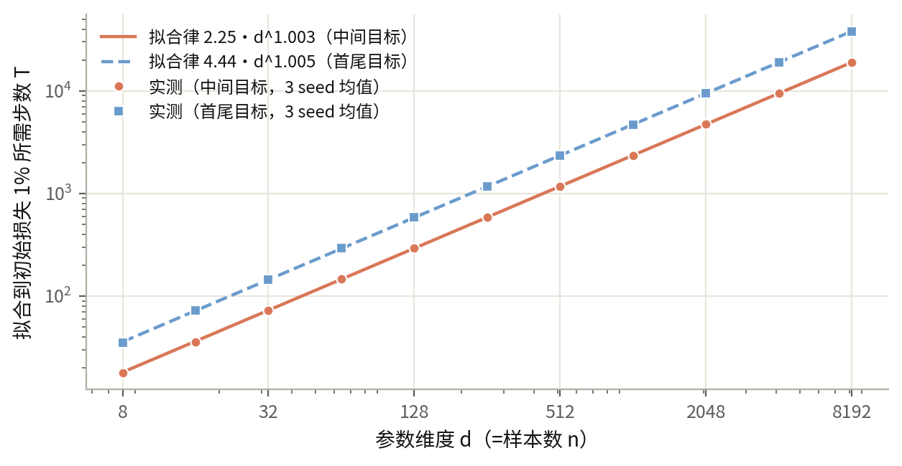

一夜之间，自动研究把四个模糊方向变成了公式级规律
🤖 gpt-6.1-sol（Sol 6.1 Ultra） · 🔁 27 个有效轮次（10-06 23:52 → 10-07 07:12） · 📐 12 个方向 · 📒 知识库（KB）75 条 · 🖥️ 本机 CPU 小张量 · 📅 2026-10-07 早
一夜跑完 27 个有效轮次。中心 KB 从 30 条涨到 75 条。用户点名的四个方向都拿到了带数字边界的规律。清晨一段网络中断烧掉 20 轮预算，已退回并加了预检，研究线 08:47 恢复，当前第 73 轮在跑。
拟合步数由目标加权谱精确算出，任何单一标量指标都不够
把训练目标分解到特征曲率的每个本征方向上，得到一组"方向能量"，这叫目标加权谱。固定特征、全批量、平方损失下，损失比例是精确级数 L(t)/L₀ = Σᵢ wᵢ(1−ηλᵢ)²ᵗ。式中 Σᵢ 对全部本征方向求和；η 是学习率；λᵢ 是第 i 个方向的曲率特征值；wᵢ 是目标在该方向的初始损失能量占比，总和为 1；t 是步数。用它算"降到初始损失 1% 的步数"，与 66 个实测点一致，误差 ≤9e-16。
对照实验构造了两个目标：Rayleigh 商（目标加权的平均特征值）、二阶谱矩、初始梯度范数、第一步损失下降、目标参数范数全部相同。它们的拟合预算仍差 1.99 倍（68 步对 135 步）。结论：标量摘要不够，必须用完整谱。
维度标度律：T₁% = 2.25·d^1.003（目标在中间模态）或 4.44·d^1.005（目标在首尾模态），d 从 8 到 8192（三个数量级），最大拟合误差 2.5%。指数在 1.005 以内，拟合时间随维度线性增长。

训练曲线在时间尺度比 15 以内是单 sigmoid，之外用无拟合两段公式
训练曲线指损失比例对步数。在对数时间轴上用单 logistic H(t)=1/(1+(t/t₅₀)^β) 描述（t₅₀ 是降到半幅的中点步数，β 是对数时间轴上的陡度）：快慢两个特征值之比（谱比）为 1、3、10、12、15 时通过注册阈值（RMSE≤.03 且最大误差≤.05）；20、25、30、100 时失败。边界在 15 与 20 之间。
谱比超过边界后，两段级联 C(t)=½H(t;h_f,b_f)+½H(t;h_s,b_s) 接管（下标 f/s 指快/慢模态，h 是该段中点，b 是该段陡度）。存在无拟合公式：每段中点 hᵢ=log2/aᵢ（aᵢ 是该模态的解析衰减率），陡度 b=2log2≈1.386。这个公式在谱比 12 到 100 的六个格点全部通过，最小误差余量 .00064。
两条精细边界：单 sigmoid 的"失败"依赖拟合目标的选择——慢模态能量占比 α=0/.01 时，改用最小化最大误差的选解就通过；α=.25 时在注册网格和参数域内可证明达不到阈值（数值界 .0834>.05，60 位小数复核）。
动量换算的适用性由慢模态能量占比决定
等效时间换算：稳态式 U=ηt/(1−μ)（μ 是动量系数），启动式 Uₜ=η[t/(1−μ)−μ(1−μᵗ)/(1−μ)²]。单模态、浅目标（降到 90%）时启动式精确到 0 步误差（实测 62/12 步=预测 62/12 步）。深目标（降到 1%）时 6/10 条件启动式比稳态式更差。
双模态下找到了控制参数：α=慢模态的初始损失占比。α≤.009 时两种换算误差都 ≥50%；α≥.02 时都 ≤5%。阈值在 .009 与 .02 之间（格点未加密）。把目标阈值加深到 q=.001，稳态式误差又回到 1% 以内——适用域不是单调的。
用户点名的"mom=0 时 U 异常变小"：把初始梯度范数从 .01 改到 .003，归一化轨迹最大差 3.22e-15。|g| 只是单位换算。10 倍差是 1/(1−m) 的代数因子，不是动力学异常（限本合成系统）。
深网络的拟合时间等于逐层核之和的时间，不是最慢层的时间
切线核：把网络在初始化处线性化，J_ℓ 是第 ℓ 层参数对输出的导数矩阵（Jacobian），K_ℓ=J_ℓJ_ℓᵀ/n，每层一块。深度 1/2/4/6、宽度 16/32 下："最慢层主导"预测超出实测 4.7 到 2067 倍（12/12 出界）。"核求和"预测 τ(ΣK_ℓ) 在 2 倍以内（10–12/12 通过；宽 32、η=.02 时全部落在 .75–1）。
过拟合最低点跟 n/σ² 走，但严格折叠不成立
t\=干净测试风险的最低点步数。经验式 log t\ = a + b·log(n/σ²)，b=.97–1.09，系数 C=eᵃ=.68–1.10。一阶规律：t\* ≈ n/σ²。57/60 个预测在 2 倍内；3 个失败点误差 2.1–2.6 倍。
"同 n/σ² 严格折叠到同一 t\"被推翻：一个随机种子（编号 414）的反例（比值 3.24）在噪声减半后仍在（3.72）。噪声变弱不恢复折叠。细结构由输入抽样和标签归一化决定。这不是无标签早停方法：t\ 的确定用了干净标签。
小批量在低学习率下保住最低点位置，统一重标度不存在
小批量/全批量的 t\* 比值：统一有效学习率重标度的预测被推翻（η=.3 时比值 .21–3.6）。降到 η=.1 并对抽样轨迹取平均后，22/24 落入 [0.5,2]；两个越界点在轨迹数从 8 加到 64 后回到界内（1.16/.77，bootstrap 区间上界 <2）——它们是抽样噪声，不是规律反例。风险口径要紧：固定同一份标签噪声与对噪声取期望，两种分母的通过率不同（22/24 对 20/24）。
激活偶通路的指数律在曲率零点从平方切换为六次方
SiLU 特征按输入反射分成奇/偶通路，R=偶能量/奇能量。普通 bias 下 R∝a²（a=输入尺度）；在二阶导数零点 b\=2.3994 处 R∝a⁶。实测：尺度加倍时 R 增长 3.98–4.00 倍（预测 4）；b\ 处 63.95–63.99 倍（预测 64）。全部系数来自 Taylor 导数，无经验拟合。
切换很尖锐：bias 偏离零点 δ=±1e-4 时增长倍数就离开 [60,68] 窗口。近根混合公式 R₂₄（二次与四次两个偶项的混合能量比）在 δ=0 到 ±1e-3 网格上误差 ≤.0012。
标签噪声稳定放大特征学习的测试差距
真实网络对"初始切线模型"（冻结初始 Jacobian 的线性近似）的干净测试差距，在训练标签加噪后扩大。判据 D=H₁−H₀：4/4 函数×宽度单元、12/12 初始化、两个独立噪声批次、一个新数据批次全部同向（mean(D)=.11–.80）。这是本程序目前跨批次最稳的效应。但"每个 seed 晚期都继续受损"不成立。
两个负结果：核漂移公式不跨数据批次，LN 条件数解释被推翻
核漂移方向：早期（32 步）读数预测晚期（256 步）的冻结线性公式，在原数据批次通过（平均绝对误差 MAE .44≤.70），换新数据批次失败（1.27>.70）。方向保留性在 3/4 recipe 成立，混合正弦目标×宽度 8 的反例保留。
LN 机制：LN 降低 hidden Gram 条件数（12/12 单元方向一致），但降幅与收益的相关 r=.42 低于注册的 .5；后续两个耦合关联预测也被推翻；条件数差在初始化时刻已存在。机制仍未定，候选范围收窄。
清晨网络中断烧掉 20 轮预算，已退回并加预检
07:12 本机 DNS 失效（cctq.ai 与 phybench.cn 都无法解析）。第 52 轮带 73k token 的工作中途断线。第 53–72 轮每轮约 40 秒即失败，但轮数照扣，07:55 预算"耗尽"，全线停车。
处置：短于 120 秒的轮次定义为基建失败，从预算退回（20 轮）；supervisor 加了网络预检——relay 不通或上游域名解析失败就不开轮，每 300 秒重试，不烧预算。08:45 模型链路烟测通过，08:47 重启，第 73 轮（宽度标度方向）已开跑。剩余有效轮次预算 20，总轮次上限提到 117。
其他线安静
旧主线（soa_async_v1，15 轮 143 条 KB）已归档，网页发布器仍存活并周期推送。第一版定向科学（v1）保持开源 v0.2.0 静态。强化学习（RL）训练线的本地证据停在 10-06 综合验收（0.8B 选择 +12.3pp、排序 +6.9pp，条件反转能力未证实；MoE 到 step 50），远端进度未刷新，需要的话可以去集群拉最新。bench 仓库无活动。
账目
轮次：累计启动 73（有效 51、基建作废 21、第 73 轮进行中）。KB：75 条（含 refuted 登记）。git：227 commits。预注册 commit 全部早于实验（自第 12 轮起）。磁盘余量 832GB。